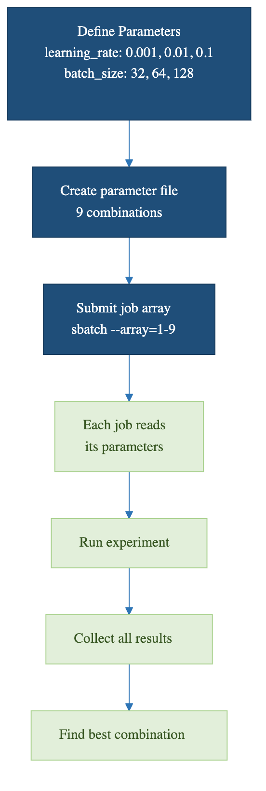

Advanced Job Arrays
Last updated on 2026-08-27 | Edit this page
Overview
Questions
- How do I map array indices to multiple parameters?
- How do I use argparse with job arrays?
- What are performance considerations for large arrays?
- How do I gather and verify results from a sweep?
Objectives
- Map array indices to multi-dimensional parameter grids
- Use Python argparse with SLURM job arrays
- Understand scheduling and performance considerations
- Aggregate and verify array results cleanly
Multi-Parameter Sweeps
The simple “one parameter per task” pattern stops working once you want to vary two or more things at once. Three approaches handle multi-parameter sweeps: direct index arithmetic, parameter file lookup, and Python parameter generation.
Cartesian Product Mapping
Map a single array index to multiple parameters using division and modulo:
BASH
#!/bin/bash
#SBATCH --job-name=train_sweep
#SBATCH --array=1-10
LEARNING_RATES=(0.001 0.002 0.005 0.01 0.02 0.05 0.1 0.2 0.5 1.0)
BATCH_SIZES=(16 32 64)
task_id=$((SLURM_ARRAY_TASK_ID - 1))
lr_idx=$((task_id / ${#BATCH_SIZES[@]}))
bs_idx=$((task_id % ${#BATCH_SIZES[@]}))
LR=${LEARNING_RATES[$lr_idx]}
BS=${BATCH_SIZES[$bs_idx]}
python3 train_model.py --learning_rate $LR --batch_size $BS \
--output results/model_task${SLURM_ARRAY_TASK_ID}.pklThe arithmetic is: total tasks = N(LR) x N(BS), index decomposes as
(lr_idx, bs_idx) = divmod(task_id, len(BS)). For three
parameters, extend with another modulo. This works but gets unwieldy
past three dimensions.
Parameter File Approach
For sweeps with many parameters or non-cartesian combinations, write a parameter file once and look up by line number:
# param_list.txt
1 red
1 green
1 blue
2 red
2 green
2 blueBASH
#!/bin/bash
#SBATCH --array=1-6
PARAMS=$(sed "${SLURM_ARRAY_TASK_ID}q;d" param_list.txt)
SETTING=$(echo $PARAMS | awk '{print $1}')
COLOR=$(echo $PARAMS | awk '{print $2}')
python3 run_experiment.py --setting $SETTING --color $COLORGenerate the parameter file in Python beforehand:
PYTHON
# generate_params.py
import itertools
settings = [1, 2, 3]
colors = ['red', 'green', 'blue']
with open('param_list.txt', 'w') as f:
for s, c in itertools.product(settings, colors):
f.write(f"{s} {c}\n")
print(f"Wrote {len(settings) * len(colors)} parameter combinations")The file approach decouples parameter generation from the SLURM script. You can review the file before submission, modify combinations without changing the script, and replicate the exact same sweep later by saving the file in version control.

Using argparse with Job Arrays
The SLURM script handles index-to-parameter mapping, but the actual
training script should accept parameters as command-line arguments using
argparse:
PYTHON
#!/usr/bin/env python3
import argparse
import os
def main():
parser = argparse.ArgumentParser()
parser.add_argument('--learning_rate', type=float, required=True)
parser.add_argument('--batch_size', type=int, default=32)
parser.add_argument('--output', required=True)
args = parser.parse_args()
print(f"Training with lr={args.learning_rate}, bs={args.batch_size}")
# ... training code ...
with open(args.output, 'w') as f:
f.write(f"Model trained with lr={args.learning_rate}\n")
if __name__ == "__main__":
main()This separation is important. The Python script knows nothing about SLURM and can be tested by hand, on a laptop, or with a different scheduler. The SLURM script knows nothing about what the training does. Each layer is independently debuggable.
Performance Considerations
Scheduling Delays
Large arrays may experience delays:
If you request scarce resources (a specific GPU type, very high
memory) at high concurrency, jobs queue. The fix is to throttle
concurrency: --array=1-1000%20 runs at most 20 tasks at a
time, which is much more likely to schedule promptly than asking for
1,000 GPUs simultaneously.
If many tasks are identical and very short, SLURM scheduling overhead per task can dominate. Batch tasks internally (process 50 work units per array task instead of 1).
Batching Tasks
For very fast tasks, batch multiple into one job:
BASH
#!/bin/bash
#SBATCH --array=1-50
# Each job processes 20 items (1000 total / 50 jobs)
START=$(( (SLURM_ARRAY_TASK_ID - 1) * 20 + 1 ))
END=$(( SLURM_ARRAY_TASK_ID * 20 ))
for i in $(seq $START $END); do
python3 process_item.py $i
doneThis converts 1,000 SLURM tasks into 50 longer-running tasks. SLURM scheduling overhead drops by 20x, and the actual work is unchanged.
Checking Array Status
BASH
# View completed job stats
sacct -j 12345 --format=JobID,MaxRSS,Elapsed,CPUTime
# Count completed vs pending
squeue -j 12345 -t COMPLETED | wc -l
squeue -j 12345 -t PENDING | wc -l
# Find failed tasks
sacct -j 12345 --format=JobID,State | grep FAILEDsacct is the right tool for post-mortem on a finished
array. It shows actual memory usage (MaxRSS), wall-clock
time per task, and exit codes. Use the output to right-size the next
sweep.
Aggregate cleanly
The end of every array sweep needs an aggregation step. Submit it as a dependent job so it only runs after the array completes:
BASH
SWEEP=$(sbatch --parsable --array=1-100 sweep.sh)
sbatch --dependency=afterok:$SWEEP aggregate.shThe --parsable flag makes sbatch output
just the job ID, which is easy to capture in a shell variable. The
aggregator script reads each task’s output, builds a summary CSV, and
reports anomalies (failed tasks, weird metric values).
Challenge
Multi-Parameter Sweep
You need to test 5 learning rates and 3 batch sizes (15 combinations). Write a SLURM job array script that maps each array index to the correct combination.
BASH
#!/bin/bash
#SBATCH --job-name=param_sweep
#SBATCH --array=0-14
#SBATCH --time=00:30:00
#SBATCH --mem=4G
LRS=(0.001 0.005 0.01 0.05 0.1)
BSS=(32 64 128)
lr_idx=$((SLURM_ARRAY_TASK_ID / 3))
bs_idx=$((SLURM_ARRAY_TASK_ID % 3))
LR=${LRS[$lr_idx]}
BS=${BSS[$bs_idx]}
echo "Task $SLURM_ARRAY_TASK_ID: lr=$LR bs=$BS"
python3 train.py --lr $LR --bs $BS --output results/model_${SLURM_ARRAY_TASK_ID}.pklTip: use --array=0-14 rather than 1-15 so
the index arithmetic uses zero-indexed lookups directly without
subtracting 1.
Challenge
Verify a Completed Sweep
A 100-task array job has finished. Write the commands to (a) check that all 100 tasks succeeded, (b) report any failed tasks, (c) gather the validation accuracy from each task’s output log into a single CSV.
BASH
# (a) Count successful and failed
sacct -j JOBID --format=JobID,State -n | awk '{print $2}' | sort | uniq -c
# (b) List failed task IDs
sacct -j JOBID --format=JobID,State -n | awk '$2!="COMPLETED" {print $1}'
# (c) Gather metrics
echo "task_id,val_acc" > sweep_results.csv
for f in sweep_*.log; do
id=$(echo $f | sed 's/sweep_\(.*\)\.log/\1/')
acc=$(grep "Final validation accuracy" $f | awk '{print $NF}')
echo "$id,$acc" >> sweep_results.csv
done
sort -t, -k2 -g sweep_results.csv | tail -5 # top 5 by accuracy- Map single array indices to multi-parameter grids using division and modulo
- Parameter files provide a clean way to define complex sweeps and version-control them
- Use argparse so the work script is independent of the SLURM script
- Batch small tasks into fewer jobs to reduce scheduling overhead
- Use sacct to review completed array performance and find failures
- Submit an aggregation job with
--dependency=afterok:$SWEEP_ID - Throttle concurrency with
--array=1-1000%20on busy clusters